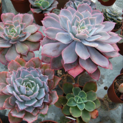

Эхеверия
Описание товара
Эхеверия Лау – самая своеобразная из всех видов эхеверий. Листья собраны в розетку, стебель короткий или практически отсутствует. Сами листья широкие, овальные, до 6 сантиметров в длину. Листья покрыты восковой пленкой, как и цветоносы, цветы мелкие, темно-розового цвета.
Каждое растение поставляется в подарочной упаковке, включающей декоративное кашпо ручной работы и паспорт растения.
Характеристики товара
- Цена: 650 ₽
- Страна происхождения: Мексика
- Высота растения: 7 см
- Стойкость: 5 из 5
- Освещенность: 5 из 5
- Влажность: 1 из 5
- Полив: 2 из 5
Подробное описание товара
Одним из самых ярких и неповторимых растений семейства суккулентов является – эхеверия Лау, получившая свое название по имени ученого обнаружившего это растение. В некоторых источниках можно встретить другое название – эчиверия Лау, оба названия правильные и относятся к одному растению. Эхеверия относится к семейству толстянковых, и представлена множеством разновидностей – «эхеверия изящная», «эхеверия агавовидная», «эхеверия горбатоцветная» и многие другие. Каждая разновидность по-своему привлекательная, уход за ними особых различий не имеет.
Jardinero на заметку
Особых требований по уходу за эхеверией нет, следует только запомнить, что обращаться с ним нужно очень аккуратно. Каждый листочек покрыт тонкой оболочкой, в виде восковой пленки голубовато – серого цвета, оболочка впитывает в себя и сохраняет воду и полезные вещества. Легкое прикосновение к листам разрушает оболочку, и растение начинает болеть. Если такая неприятность случилась растение нужно немедленно поместить под стеклянный купол или накрыть прозрачным пакетом, до полного выздоровления.